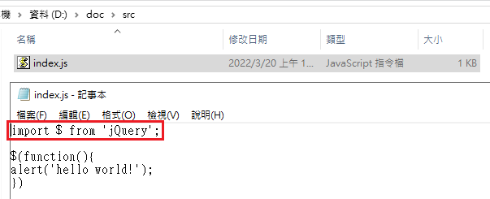

Author：Mat
Date：2022-03-19
Description：試著嘗試看看前端工程師常用的打包工具webpack
Webpack為前端工程師常使用的Bundle工具，以往的情境中，工程師常常需要在頁面中載入很多的js檔案來載入各種擴充套件，但因為太多的檔案，容易造成網路流量的消耗。然後就會有另外一種使用方式：把所有的js都綁在同一個檔案上就好了啊，馬上就會被說「這什麼爛code，作用域都混在一起了，而且這個檔案超肥，誰想翻阿?」，但我們可以透過一些任務執行器(Task Runner，例如:Gulp)，指定想要的模組一個一個拼接在一起，在每個頁面中只設定想要的模組合併成一個檔案，但還是會有些問題，如果說我今天只是要某個模組當中的一個function，我還是只能整包丟進去。
於是Webpack就誕生了，計算各項資源間的依賴性後產生bundle檔案，對於前端框架(如：Vue、React)，尤其是做成SPA的網頁程式來說，是一種非常好用的資源管理工具
安裝node.js，通常會隨著安裝npm工具
撰寫當下版本
- node.js：16.14.2
- npm：8.5.0
參考連結
node -v
npm -v
webpack是使用node.js執行的，和gulp一樣透過npm安裝
前端專案的起手式似乎都是先建立個npm的根目錄，基本上和npm的模組方式有關，和C#的專案使用的nuget一樣，大概可以想成是nuget的PackageReference就相當於npm的global packages，而package.config就差不多是local packages，但差在npm的方式是初始化的專案會將要使用的module都搬進專案資料夾內(參考)，預設的名稱是node_modules
執行的方式就是先建個資料夾，使用CMD(命令提示字元)移動到該資料夾下，輸入npm init，會問一下基本的專案設定，每一個問題都可以按下Enter略過，若不想一個一個填寫，可以參照教學一樣加上一個-y的參數。
npm init -y
※備註
CMD切換目錄的方式為>cd {目錄}，例如：想將當前目錄切換到D:\source下，則輸入cd "D:\source"，如果當前並不在D槽下，則透過>D:來做更換動作
和gulp不一樣的是，教學並沒有說需要安裝全域，這邊就依照教學照做，將webpack、webpack-cli都裝起來
npm install webpack webpack-cli --save-dev
後端小白就不照教學用lodash了，小白大多只會用用古老的jQuery而已
建立程式碼的進入點
在src\js中建立一個index.js，裡面單純寫跳個hello world就好，不過是用$放在ready事件中，來告訴webpack說這一個東西相依在jQuery上

再來比照教學把package.json的內容調整一下
把"main": "index.js"刪除，加上"private": true
新增index.html
在dist資料夾下建立一個index.html，來把預期bundle結果的檔案(預設為main.js)做載入，記得要有點基本的html結構比較正常
載入npm模組 - jquery
開始跟webpack的教學越來越遠，這邊我們來把jquery載入到npm中，讓webpack可以從中去判斷相依性，以及從npm來把js產出
npm install jquery
備註：
安裝npm上的jquery的時候，發現npm的模組具有大小寫的差異，裝錯還會提醒有其他版本，因此做了一次反安裝再重裝的動作，順便提一下npm反安裝的關鍵字是uninstall，縮寫則是uni
輸入cmd指令執行webpack
輸入npx webpack，預設會在dist資料夾中產生bundle後結果，名稱為main.js
npx webpack
檢視bundle成果
打開前幾步驟建立的index.html，就會看到正確載入的結果
檔案產出則是有一個main.js及著作權宣告的main.js.LICENSE.txt
當然這個main.js裡面是minify之後的結果
index.js上寫了一句import $ from 'jquery';，意思就是將$符號匯入到這份js檔案中，而webpack也可以透過這個宣告來去npm local
packages找對應的package來打包，還有很多其它種讓webpack辨識的方式，可以參考官方文件(參考)，不過ES6的import是官方推薦的，並且建議只使用單一種方式，避免發生各種光怪陸離的事情。
webpack支援將config獨立成為一支檔案，教學給的檔案名稱是webpack.config.js，當然也可以配合建置的設定來做個prod.config.js和dev.config.js，然後在package.json檔案中設定各種環境的建置指令
關於更詳細的設定，可以參考webpack的官方網站說明
建立一個prod.config.js
範例
const path = require('path');
module.exports = {
entry: './src/index.js',
output: {
filename: 'main.js',
path: path.resolve(__dirname, 'dist'),
},
};
在這邊的設定中就可以開始看見能夠指定輸出的檔案，以及輸入的檔案了
輸入指令npx webpack --config prod.config.js就可以讓webpack依照config中設定執行
但我們這裡先去調整一下package.json，加入build的script，並且在其中寫入webpack --config prod.config.js
然後在cmd視窗中執行指令npm run build，也就是透過npm來指定要執行的script
npm run build
修改一下config內容，讓webpack同時合併兩個js，以下的config內容會合併index.js與app.js
const path = require('path');
module.exports = {
entry: ['./src/index.js','./src/app.js'],
output: {
filename: 'main.js',
path: path.resolve(__dirname, 'dist'),
},
};
app.js未加入require或import提示，但直接使用jQuery的function
$(function(){alert('app.js')})
在沒有匯入的情況下，webpack僅會將內容直接合併，並不會判斷相依情況，並且將內容封裝於閉包中，app.js的程式碼不會執行
app.js加入import提示
import $ from 'jquery';
$(function(){alert('app.js')})
不意外的正常運作，因為本來就是要這樣用
app.js加入import提示，但故意將模組大小寫用成不一樣
import $ from 'jQuery';
$(function(){alert('app.js')})
執行webpack成功，但是因為大小寫不一樣出現警告，並且webpack出來的結果大小暴增，應該是一次包了兩個版本出來
修改一下config內容，讓webpack可以依照功能名稱自動產出需要合併的檔案(參考)
在src裡面新增一個lodash.js，內容就拿原本官方文件的範例來吧，記得要透過npm i lodash指令，來安裝lodash到local packages中
import _ from 'lodash';
function component() {
const element = document.createElement('div');
element.innerHTML = _.join(['Hello', 'webpack'], ' ');
return element;
}
document.body.appendChild(component());
調整config設定，讓webpack的out參數可以變成動態的
這裡是希望最後能產出四個檔案
const path = require('path');
module.exports = {
entry: {
app: './src/app.js',
index: './src/index.js',
lodash: './src/lodash.js',
main: ['./src/app.js', './src/index.js', './src/lodash.js']
},
output: {
filename: '[name].js',
path: path.resolve(__dirname, 'dist'),
},
};
產出結果
產出結果正常
從檔案總管來看，的確產出四個檔案，app.js、index.js相依在jquery、lodash.js相依lodash，最後有個js檔案都讀一輪的main.js，需要在不同檔案上讀取到jquery與lodash
合併多檔案的情況下，實際結果沒有像想像中一樣執行
依照產出檔案內容建立各個引用頁面，預期結果應該要是app.html會彈出app.js、index.html會彈出hello world、lodash.html在body寫入Hello webpack，main.html則是要前面的行為都做一輪
執行結果在main.html沒有正常運作，但在其它頁面都是正常的
後面有再試著將lodash.js的內容調整為更簡單，僅彈出一個test
alert('test')
運作結果為正常，可見是我不會寫
或者是在import的行為上，只能接受一模一樣的，那就適合寫成每個頁面對一個js，並匯入那個頁面需要的模組
再不然就是多個檔案合併的時候，需要挑選沒有相依模組的來做會更簡單
因為現在前端、後端已經越來越涇渭分明，但又需要處處合作產生一個完整的應用程式，以前偏向做desktop應用程式的也紛紛要推出web的介面。
好在網路資源發達，後端小白上網看看官方文件也能略懂略懂，照著做還真有這麼一回事的樣子
不過當然不是這麼簡單驚呼一下「喔!好厲害!」就結束了，我們都知道很多介紹文件都是話術，當然還是要評估一下這項技術有沒有適合現在的開發方式
粗淺的試了一下，整個流程看起來是webpack打包相依的物件到dist產出目錄中
flowchart LR;
src-->webpack-->dist
但在打包過程中，測試把import指示字從原本的index.js上移除，webpack就無法知道程式的相依性，單純變成簡單的minify行為，似乎不是有什麼黑科技可以看到程式碼就知道相依到什麼套件上去，把module從npm package移除，改使用相對路徑的方式載入import可行，也就是在offline的情況下，還是有執行的可能，而不用一直去找npm要package來裝，當然不喜歡用ES6的import，還可以使用CommonJS的require來表示相依性，但還是要寫
使用上的感覺是webpack適合能夠在每一頁載入不同資源，對於資源載入相依性非常瞭解的人適合使用，可以只寫會用到的app.js做為webpack的程式進入點，當然也可以一次寫很多個，相依的額外套件都靠import匯入，跟寫C#的時候，使用nuget載入套件一樣，但最後匯出檔案的位置只有一個，而且範例也是先建立好index.html，並且在裡面寫入載入script tag，所以感覺上適合的是依據各頁面所需不同，做成不同的打包檔案並在各頁面中使用，目的在流量的最小化，但要控制合併之後的結果還能夠正確運作似乎就需要有更資深的技術，可能要把會被挑選進合併的js檔案內容都寫好吧
flowchart LR;
src-->webpack-->A.js-->A頁面
webpack-->B.js-->B頁面
當每頁都是全域性載入的共用程式的時候，為了囊括最大的可能性，大概就會變成只能做到minify而無法做到相依性計算，在這種情況下使用webpack就有點大材小用的樣子，不如使用gulp等任務排程器建立資源檔案的合併就足夠使用了，但如果套用了前端元件化的框架(如：vue.js)，可能就另當別論了
當然現在還有另外一種開發的模式是SPA(Single Page Application)，一頁對全部，這種情況當然是非常適合使用webpack
Murmur：
感覺現在前端需和後端一樣要透過「建置」才夠用，尤其是現在各種都是走cli風格，前一陣子想摸摸看vue就看到.vue的檔案，摸TypeScript就是.ts，css似乎也有scss、less等門派，這些東西平常根本不會直接在瀏覽器上看到，透過Webpack就可以將這些有的沒有的東西編譯成平常瀏覽器上看到的js、css檔案，甚至可以協助處理一些麻煩的路由問題，不得不說真的很會想，技能真的是越來越專精化了
裝到一半還看到npm版號又不一樣說要執行更新，但離我把Lab環境裝起來才過不到幾分鐘，node.js的LTS版本也是換的很勤，不到一個禮拜才摸了一下gulp，現在版本又更高了，前端的腳步真的是超級快...